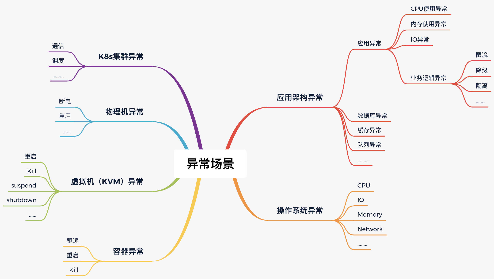
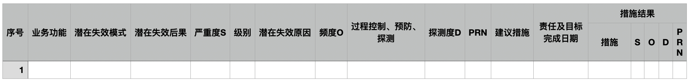
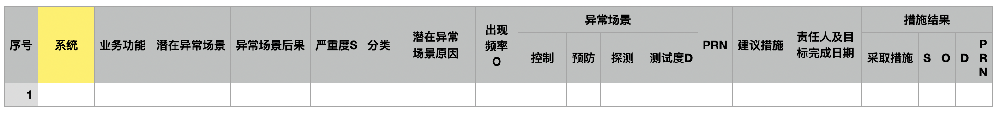
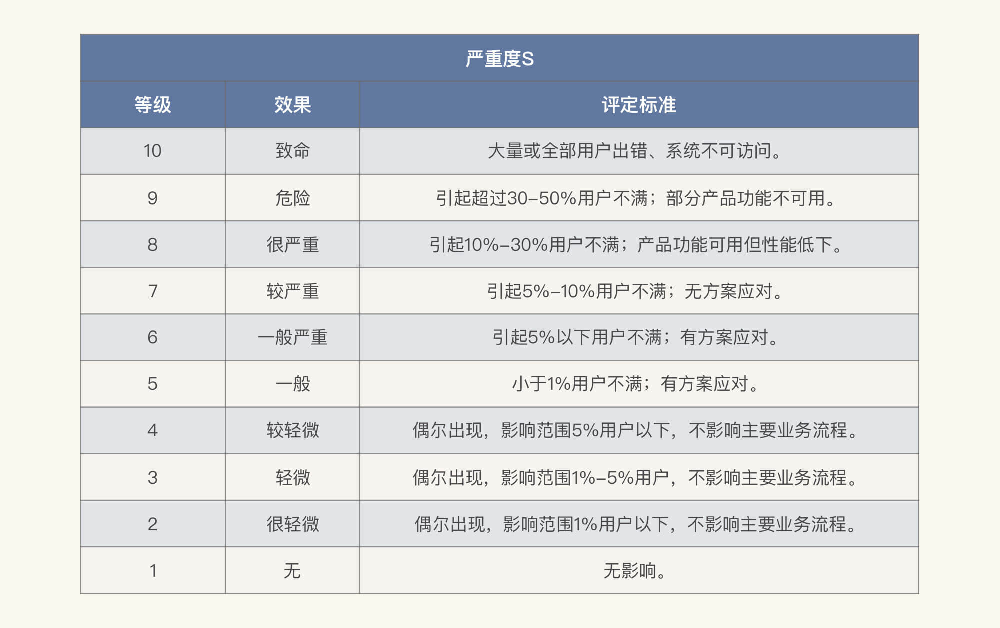
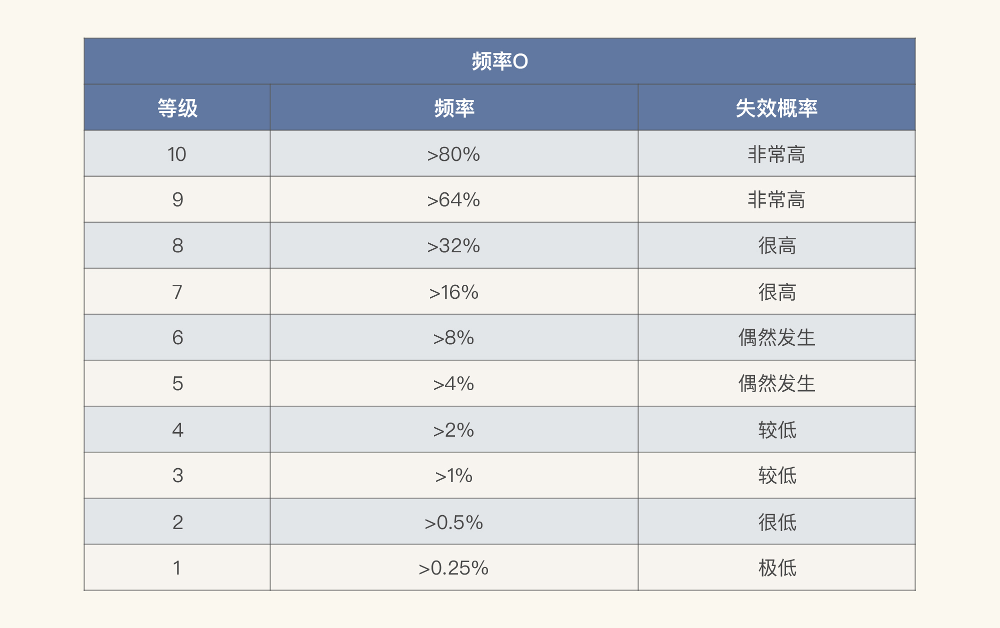
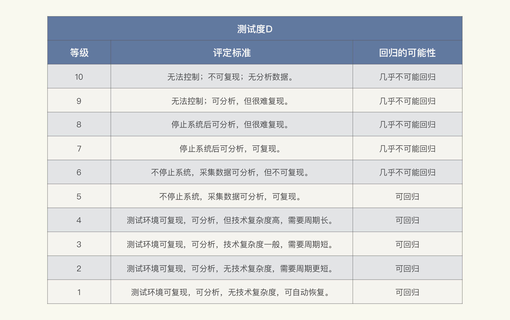
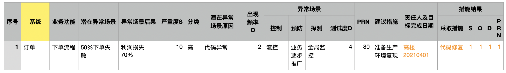

- 00 开篇词 打破四大认知局限，进阶高级性能工程师.md.html
- 01 性能工程：为什么很多性能测试人员无法对性能结果负责？.md.html
- 02 关键概念：性能指标和场景的确定.md.html
- 03 核心分析逻辑：所有的性能分析，靠这七步都能搞定.md.html
- 04 如何构建性能分析决策树和查找瓶颈证据链？.md.html
- 05 性能方案：你的方案是否还停留在形式上？.md.html
- 06 如何抽取出符合真实业务场景的业务模型？.md.html
- 07 性能场景的数据到底应该做成什么样子？.md.html
- 08 并发、在线和TPS到底是什么关系？.md.html
- 09 如何设计全局和定向监控策略？.md.html
- 10 设计基准场景需要注意哪些关键点？.md.html
- 11 打开首页之一：一个案例，带你搞懂基础硬件设施的性能问题.md.html
- 12 打开首页之二：如何平衡利用硬件资源？.md.html
- 13 用户登录：怎么判断线程中的Block原因？.md.html
- 14 用户信息查询：如何解决网络软中断瓶颈问题？.md.html
- 15 查询商品：资源不足有哪些性能表现？.md.html
- 16 商品加入购物车：SQL优化和压力工具中的参数分析.md.html
- 17 查询购物车：为什么铺底参数一定要符合真实业务特性？.md.html
- 18 购物车信息确定订单：为什么动态参数化逻辑非常重要？.md.html
- 19 生成订单信息之一：应用JDBC池优化和内存溢出分析.md.html
- 20 生成订单信息之二：业务逻辑复杂，怎么做性能优化？.md.html
- 21 支付前查询订单列表：如何分析优化一个固定的技术组件？.md.html
- 22 支付订单信息：如何高效解决for循环产生的内存溢出？.md.html
- 23 决定容量场景成败的关键因素有哪些？.md.html
- 24 容量场景之一：索引优化和Kubernetes资源分配不均衡怎么办？.md.html
- 25 容量场景之二：缓存对性能会有什么样的影响？.md.html
- 26 稳定性场景之一：怎样搞定业务积累量产生的瓶颈问题？.md.html
- 27 稳定性场景之二：怎样搞定磁盘不足产生的瓶颈问题？.md.html
- 28 如何确定异常场景的范围和设计逻辑？.md.html
- 29 异常场景：如何模拟不同组件层级的异常？.md.html
- 30 如何确定生产系统配置？.md.html
- 31 怎么写出有价值的性能报告？.md.html
- 我们这个课程的系统是怎么搭建起来的？.md.html
- 结束语 做真正的性能项目.md.html
- 捐赠
28 如何确定异常场景的范围和设计逻辑？
你好，我是高楼。
在性能的领域中，异常场景一直都处在薄弱的环节，大家都觉得异常场景应该做，但是又不知道怎么做才能把异常问题覆盖全面。
异常范围之所以比较难确定，是因为有很多问题都被归纳到了“异常”中，比如说高可用、可靠性、灾备等等。当然，也有些企业把这部分归纳到非功能中来做，因此在性能的项目中就不会有异常场景了。
在我的RESAR性能工程理论中，异常场景是必须要做的，这主要是因为异常场景需要压力背景。
既然要做异常场景，我们具体该怎么做？测试哪些问题才能将异常场景覆盖完整？这就需要我们明确两个关键点：一是异常场景的范围，二是异常场景的设计逻辑。
因此，在这节课中，我们就来看看如何确定异常场景的范围和设计逻辑。
异常场景的范围
在以前的异常场景中，基本上采用的是宕主机、断网络、宕应用这几种测试手段。此外，从主机、网络、应用等视角出发，还会有一些细分操作，比如说：
- 主机：断电、reboot、shutdown等；
- 网络：ifdown命令关网卡、模拟抖动丢包延时重传等；
- 应用：kill、stop等。
上述这些操作在当前新的技术架构中仍然有效，只不过现在会有更多的细分操作。因为现在微服务的应用多了之后，又多出了几层，比如虚拟机层、容器层、网关层等等。我在这里画一张图，大概罗列一下异常场景测试的不同角度：

关于做异常场景的范围和时机，有两个话题也一直在争论：
- 异常场景到底应不应该放到性能项目中完成？
- 异常场景到底包括什么样的内容？
对于第一个问题，我是这样考虑的：不管是代码逻辑验证、功能验证、还是性能验证，我们只要模拟出真实的异常场景，都会有异常场景的细分。在当前的测试市场中，有很多企业也确实这样做了，这是一个好现象。而这些异常场景需要在有压力背景的前提下进行，所以它应该放到性能项目中来完成。
因为如果把这一类场景放在其他阶段完成，像脚本、参数、监控等这些工作都要重复做。如果还需要不同的团队共同完成，那成本显然会增加。
对于第二个问题，你可能会感到奇怪，上面那张图不是已经把异常场景包含的内容全都列出来了吗？这里怎么还要提呢？这主要是因为在技术市场中，有很多不同的声音和视角，一些人觉得在异常场景中也还应该包含高可用、可靠性、可扩展、可伸缩、稳定性等内容。
其实，对于这些技术名词，我们很多时候都似懂非懂，感觉自己知道是怎么一回事，但是又抓不住重点。就拿可靠性为例，可靠性在实施的过程中，我们能想到的就是一个系统在一定的时间和条件下无故障地运行。可是，既然如此，那“稳定性”又是什么呢？我们知道，稳定性是指在规定的一定长的时间内系统无故障运行。
咦，怎么看起来意思差不多？“可靠性”和“稳定性”到底有啥区别呢？在我看来，稳定性包括在了可靠性之内。
我这么一说，你应该就明白了，在当前技术市场中，虽然有很多人提出了不同的视角，但是，如果我们把这些视角对应的落地步骤罗列一下，你就会发现，它们都能落在我刚才讲的这张图里。
因此，请你记住，在异常场景中，我们只要包含图中的这些内容就足够了。
异常场景的设计逻辑
从逻辑上来说，异常场景的设计主要分为两步：
分析架构：把技术架构中的组件全部列出来，并分析可能产生异常的点。
列出异常场景：根据分析的异常点设计对应的场景。
这样的逻辑看起来并不复杂，如果我们只从组件级来考虑，那就可以设计通用的异常场景了。但是，如果从业务逻辑异常的视角来看，就没有通用的异常场景了，我们需要针对不同业务设计不同的异常场景。
不过，在性能领域中，大部分人对异常场景没有什么设计套路，都是跟着感觉走的，而且即便是遵循上述这两个步骤设计异常场景，也必然会涉及到一个问题：异常场景覆盖得全不全？
对于这个问题，我建议你在异常场景的设计逻辑中，参考FMEA失效模型的逻辑，因为FMEA至少是一套有逻辑的设计思路，可以让我们有章可循。
FMEA在性能行业中使用率并不高，大家对它基本上处于不明就理的状态。在我深入了解了FMEA之后，觉得它作为一套分析失效模型的方法策略，可以被应用在性能项目的异常场景设计中。因此，如何把FMEA借鉴到异常场景中，是我们接下来要讨论的一个问题。
我在这里先给你简单介绍一下FMEA。
FMEA是一套做事的逻辑，它最初被用于战斗机的操作系统设计分析中，后来又被广泛应用于航天、汽车、医疗、微电子等领域。
FMEA是Failure Mode&Eeffect Criticality Analysis的缩写，中文含义是潜在失效模型或影响的严重等级分析，它又分为DFMEA、PFMEA和FMEA-MSR：
- DFMEA，也就是Design FMEA，是针对设计阶段的潜在失效模式分析；
- PFMEA是指Process FMEA，它针对的是过程；
- FMEA-MSR是“FMEA for Monitoring and System Response”的缩写，也就是“监控和系统响应”的意思，它通过分析诊断监控和系统响应（MSR）来维护功能安全。
FMEA的这三个细分采用的逻辑是一致的，只是针对的阶段和关键点不同而已。
如今，在IT技术圈中，也不乏有人尝试在软件系统中落地。在FMEA中，最重要的就是下面这样的表格，你在网上也经常能看到。

我解释一下表格中的“RPN”，它是Risk Priority Number的缩写，意思是风险系数、风险优先级。RPN是“严重度 S”、“频度 O”、“探测度 D”三个的乘积。至于表格中其他的名词，你看了字就能大概理解，我在这里就不多啰嗦了。
看到这样的表格，你是不是觉得它很难在IT架构中使用？其实，在异常场景具体落地的时候，我们可以根据自己的理解，把表格做一些变化：

我在表格中加了一个“系统”列，这是因为一些项目有多个系统。当然，你也可以不加这一列，把整个表格命名为某系统的表格。至于其他名词，我只是做了相应的调整，并没有改变原有的表结构。
在我们填写这张表格之前，有一点我要说明一下。在FMEA中，严重度、频率、探测度需要各自分级，并且都分为1～10这10个等级。下面我大概列一下这三个方面不同级别的含义。请你注意，我只是描述相对通用的内容，尽量不和业务挂勾。
严重度S- 
频率O- 
测试度D- 
对于你自己的系统，不一定要完全照搬上面表格中对等级标准的划分，不过，逻辑还是可以借鉴的。
现在，我给你举一个异常用例，来看看严重度、频率和探测度这三个角度具体是怎么落地的：

对应着这张表格，你应该知道怎么列出你自己的异常场景了。
请你注意，即便你想用FMEA来设计异常场景，我在这节课一开始画的那张图仍然是不可或缺的，因为那是这张表格的输入条件之一。也就是说，在填写这张表格之前，我们一定要清楚在异常场景中测试哪些内容，这一点非常重要。
不过，有了这张表格，以及严重度、频率和探测度的10个等级之后，异常场景一下子就变得复杂了。因为PRN有太多的可能性，具体算下来的话，应该有10X10X10=1000种PRN值。
如果我们把系统中的全部异常场景都列出来，那就得按PRN的值从上到下挨个执行了。假设，PRN为1000的场景有10个；PRN为900～1000的场景有20个……..这样一个一个数下去，都要吐了对不对？
记得之前我跟一个IT经验非常丰富的朋友聊天，我们说到写异常用例这个话题。他说，如果让他来设计异常用例，针对一个系统设计出上万甚至更多的用例基本不在话下。然后，我说：“那你设计的这些异常用例，在生产上出现的概率是多少呢？如果系统运行到寿终正寝都没出现这些情况，那要这些用例有什么用呢？
通过这段对话，你可以思考一个问题：我们是不是非得把自己系统的异常场景弄这么复杂呢？
当然不是，其实我们可以做简化，比如说把等级减少。我们在前面讲到，在FMEA中，严重度、频率和探测度分别都定义了10级，那对于系统的异常场景，我们定义三四个等级就可以了。如果你要较真，觉得三四个等级不合适的话，那你可以根据自己系统的情况来用这个逻辑，具体怎么用就要看你系统的重要性有多高了。
总体来说，FMEA是一套非常完整的逻辑，它的第四版白皮书就有130多页，你要是有兴趣，可以去看看。
其实，在FMEA落地到异常场景测试的过程中，套用FMEA并不复杂，复杂的是如何制定S、O、D。因为在具体制定的时候，并不像我在前面列出三个表格那么简单，它需要拿系统的逻辑来进行详细分析。
接下来我就得摆摆观点了，请你记住，对任何一套方法论逻辑的落地实施，都不要过度使用，而要注意合理使用。从我接触过的老外的思路和逻辑来看，他们很喜欢弄一些RESEARCH方面的功能，并延伸出一套理念，然后拿着这套理念就可以忽悠一辈子。
记得在我带过的团队中有一个老外，是一个年轻小伙，他一直在做缺陷管理员的工作，也就是天天去追Bug的修复进度。有一天，他找我说想离职，我问他：“那你想干什么呢？”他说：“我想做RESEARCH”。我继续问：“那你想研究个啥呢？”他回答说：“我还没想好，但是我想做RESEARCH。”他说的时候，似乎觉得RESEARCH是一个挺高端的事业。我微微一笑说：“行，那你去吧。”
我讲这一段，不是说FMEA也是没有经过深思熟虑的方法论，而是想说，我们在看待外来的理念时，一定要保持冷静，至于哪里的月亮更圆更亮，取决于时间。对于FMEA在性能中的应用，我们同样也要理智地使用。同时，我们也应该有自己完整的思维能力。
因此，我建议你在异常场景设计时，可以参考FMEA中的逻辑，把不适用的部分给清理掉，设计出符合自己系统的失效模型。而我们这节课的描述也只是给你一个思路，因为授人以鱼不如授人以渔，才是我的初衷。
上述内容就是我针对异常场景的设计，所做的尽可能全面的描述了。请注意，其关键点不是FMEA，而是上文中的异常场景范围图。
可是，叭叭地讲了这么多，如果不落地，实在不符合我的风格。所以，我们还是要有具体的操作实例的。在下节课中，我们就按照这节课一开始画的视角，做几个实际的案例来看一看，异常场景具体该怎么执行。
总结
针对异常场景，在性能行业中各有各的看法，并且谁都说服不了谁，这就导致每个企业做的异常场景范围都不一样。同时，行业中又有很多关于混沌测试、非功能测试的不同说法。因此，异常场景一直都没有在性能项目中固定下来。
而在RESAR性能工程理念中，对于有压力背景的异常场景来说，我觉得由性能人员来完成它，是责无旁贷的。
通过这节课，我想告诉你的就是异常场景的范围应该有多大，以及设计的逻辑应该是怎样的。有了这些内容之后，异常场景的覆盖率就会足够全，并且也有章可循了。
课后作业
最后，我给你留两道题，请你思考一下：
- 你做过哪些异常场景设计？说说你的设计思路。
- 你遇到过什么样的异常问题，请举例说明一下。
记得在留言区和我讨论、交流你的想法，每一次思考都会让你更进一步。
如果你读完这篇文章有所收获，也欢迎你分享给你的朋友，共同学习进步。我们下一讲再见！
© 2019 - 2023 Liangliang Lee. Powered by gin and hexo-theme-book.